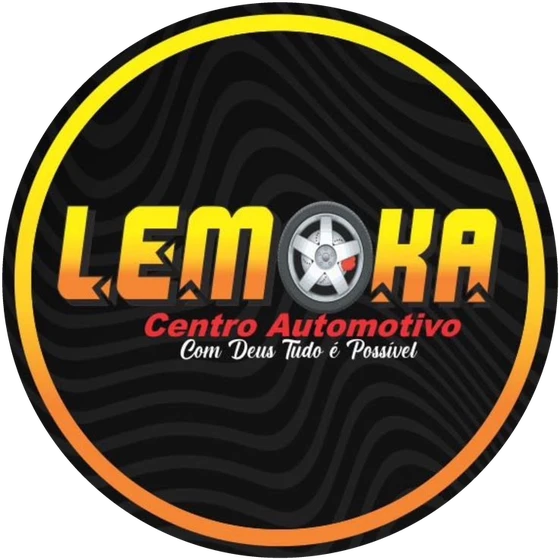

Carro balançando
Depois de uma lombada o carro sobe e desce várias vezes antes de firmar.
Promoção de amortecedores
4,9 no GoogleAmortecedor bom é mais conforto, mais estabilidade, frenagem melhor e pneus que não deformam. Na Lemoka você resolve isso com ótimo custo-benefício, com peça, instalação, alinhamento e revisões no mesmo preço.
Kit a
partir de
R$249,90
Amortecedores remanufaturados. O valor final depende do modelo do carro.
Av. Augusto Abílio Távora, 4505 · Valverde · em frente ao Supermarket
Amortecedor gasto não quebra de uma vez. Ele vai perdendo força e o motorista se acostuma. Se você percebe dois ou mais destes sinais, está na hora de trocar.
Depois de uma lombada o carro sobe e desce várias vezes antes de firmar.
Barulho de batida ou estalo na suspensão quando passa em buraco ou paralelepípedo.
A frente do carro afunda ao frear e ele demora mais para parar. Isso é segurança.
Pneu com desgaste irregular, em "ondas" ou só de um lado da banda de rodagem.
Mancha ou umidade de óleo no corpo do amortecedor indica vazamento.
Teste rápido: com o carro parado, empurre com força um dos cantos para baixo e solte. Se ele subir e descer mais de uma vez, o amortecedor perdeu a função.
Quero uma avaliaçãoDiga o modelo e o ano do seu carro.
Você recebe o preço exato do kit para o seu carro, sem surpresa.
Escolha o melhor horário de segunda a sábado.
Troca, alinhamento e as 3 revisões já estão no pacote.

Com Deus tudo é possível
WhatsApp (21) 97013-1478
4,9
★★★★★
Nota dos clientes no Google
Os clientes da Lemoka avaliam o atendimento, o preço e o serviço com nota 4,9 no Google. Veja as avaliações reais antes de vir.
Ler as avaliações no GoogleAlém da suspensão, a Lemoka cuida da manutenção completa do seu carro em Nova Iguaçu.
Em frente ao Supermarket, na Av. Augusto Abílio Távora
Av. Augusto Abílio Távora, 4505, Loja A(21) 97013-1478
| Segunda a sexta | 08:30 às 17:30 |
| Sábado | 08:30 às 13:30 |
| Domingo | Fechado |
É um amortecedor recuperado: a carcaça é aproveitada e as partes internas que se desgastam são substituídas. Depois ele é testado antes de ser instalado. Custa bem menos que uma peça nova.
4 amortecedores remanufaturados, 4 batentes, 4 coifas, 1 alinhamento, 3 revisões e a instalação.
O valor é a partir de R$ 249,90 e varia conforme o modelo do carro. Mande o modelo e o ano pelo WhatsApp para receber o valor exato.
Vale revisar a cada 10 mil km. A troca costuma ser necessária entre 40 e 60 mil km, ou antes se o carro balançar demais, bater seco em buracos ou deformar os pneus.
Na Av. Augusto Abílio Távora, 4505, Loja A, no Valverde, em frente ao Supermarket. Segunda a sexta das 8h30 às 17h30 e sábado das 8h30 às 13h30.
Sim, chame no WhatsApp antes para reservar o horário e garantir que as peças do seu carro estejam separadas.
Mande o modelo do carro e receba o valor exato em minutos.